Due to the spread of the covid-19, we have to take classes through the internet at home.
Online courses have become the new normal for almost all student groups.

Most people are doing other things when taking classes. As you can see, people are painting, shopping, sleeping, drawing and talking to others.
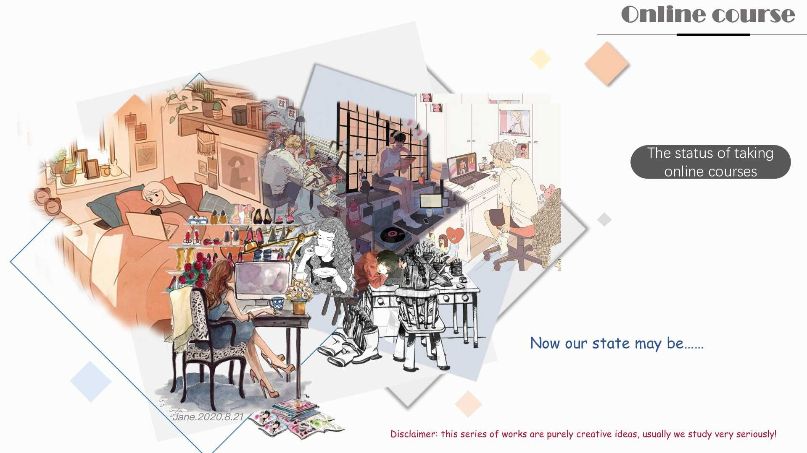
I name it Gemini because I want to convey the message that people are complicated and they have different faces online and offline.
When I started my new normal project, I used a mind map to guide my brainstorming process. However, I couldn’t decide which topic to choose.
I happened to have dinner with a friend who’s a teacher, and he complained about online courses he was giving to his students at that time. He didn’t like it because he couldn’t know what the students on the opposite side of the network were doing if there was no video.
He was always worried that students might be losing their focus or doing other things when having online courses. It inspired me to think that different people might be in different conditions in class and I decided to take an online course as the theme for my new normal project.
I firstly looked for a lot of pictures of students in different conditions and then made a collage of people doing different things when they are using their laptop.
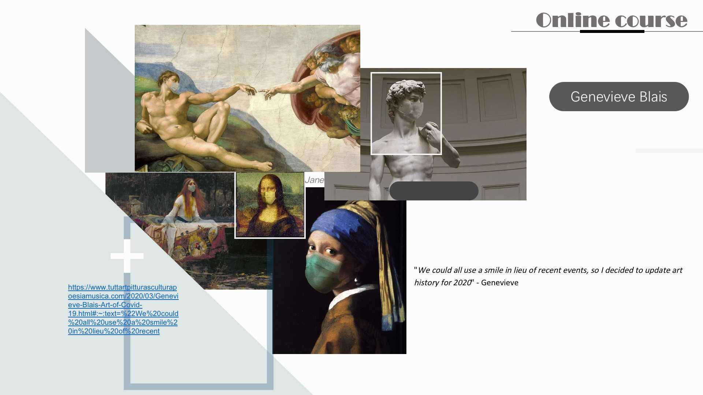
After that, I got inspiration from the work of two artists Blais and Looma. The topics of these two artists are both masks and distance. They combined disease-related masks, gloves, and other items with world-famous paintings to create new pictures. They look very interesting.
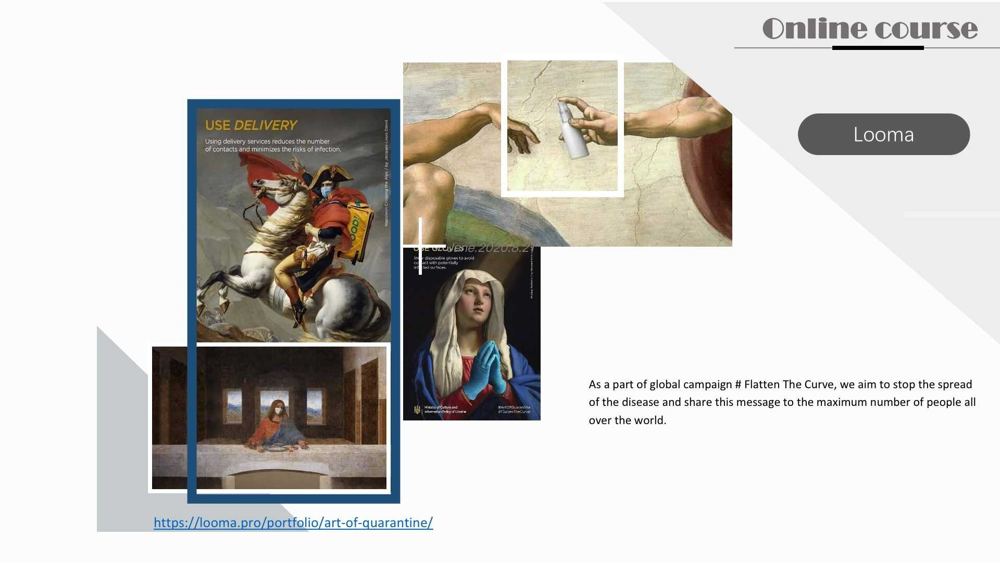
Another idea came to my mind: “What would people from different times look like if they had the chance to have online courses at their time?” With this idea in mind, I found some paintings by famous artists and decided to add internet elements into those paintings.
I carved out some figures from the original paintings and then added a laptop to each picture.
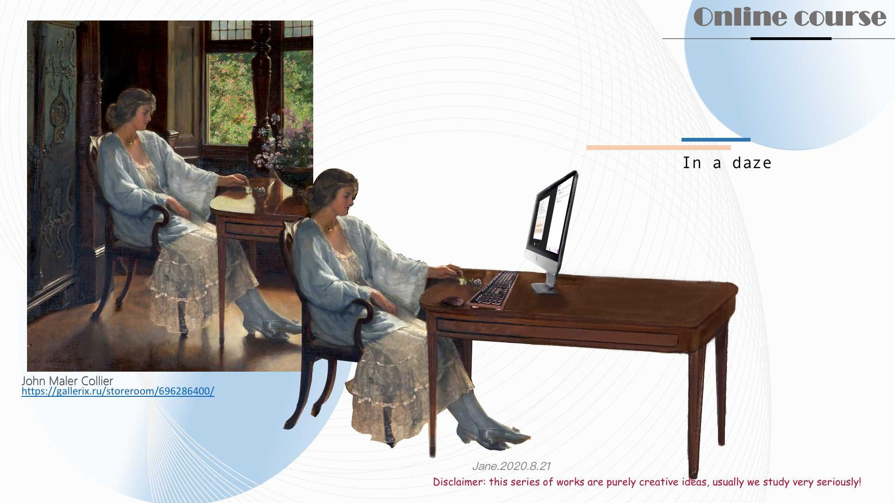
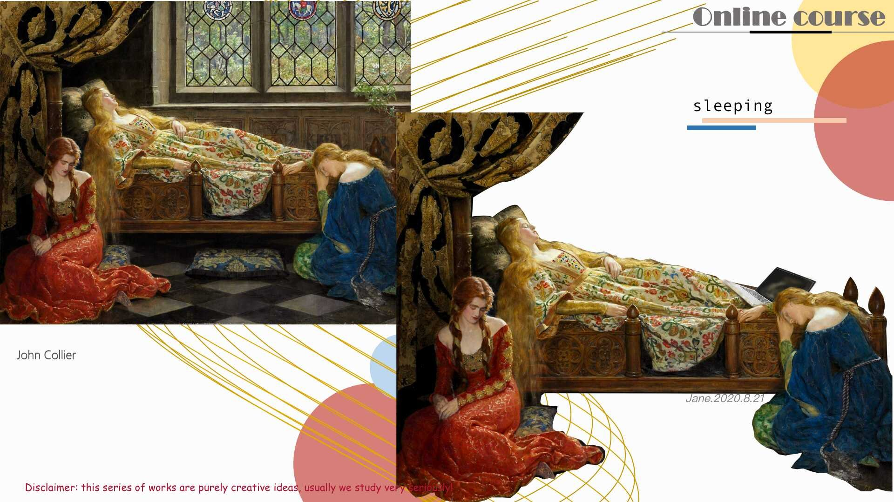
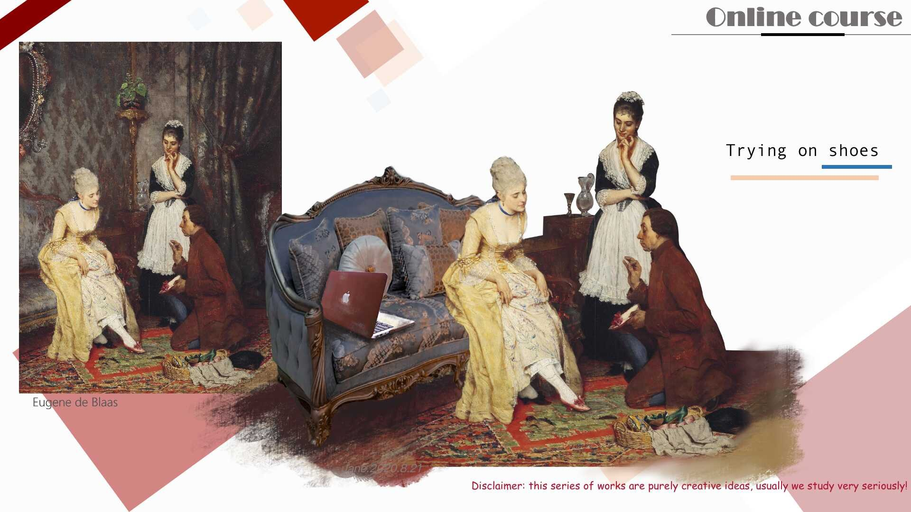
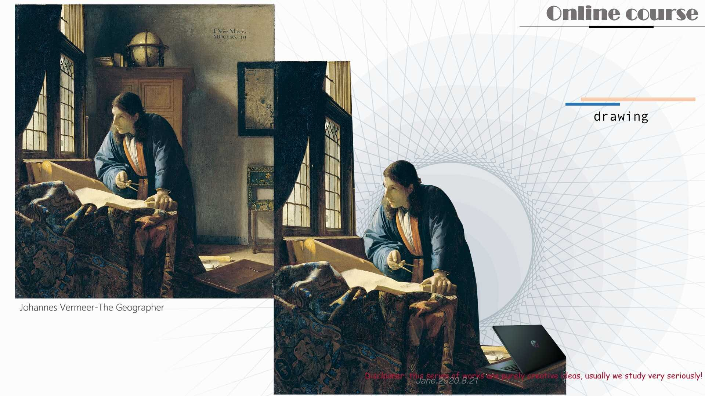
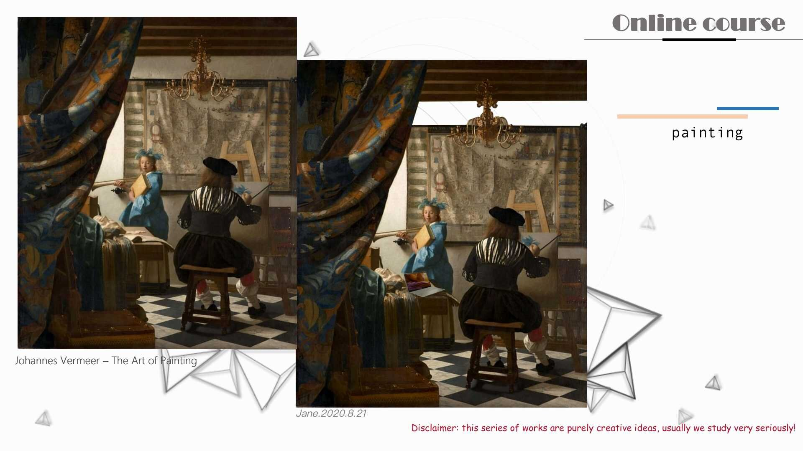
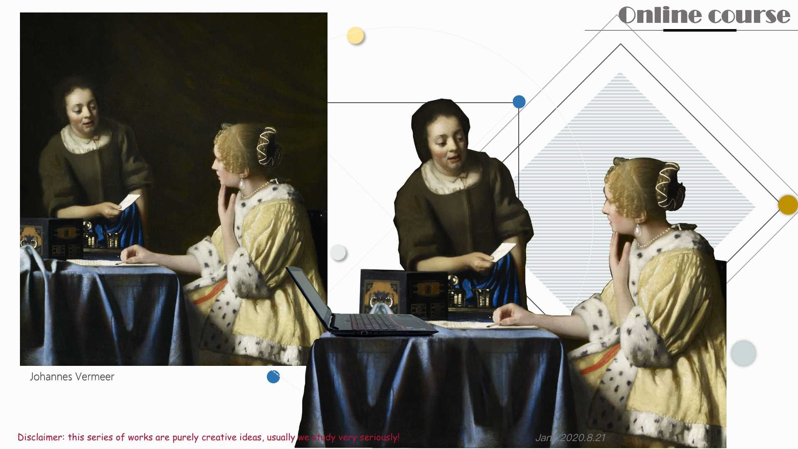
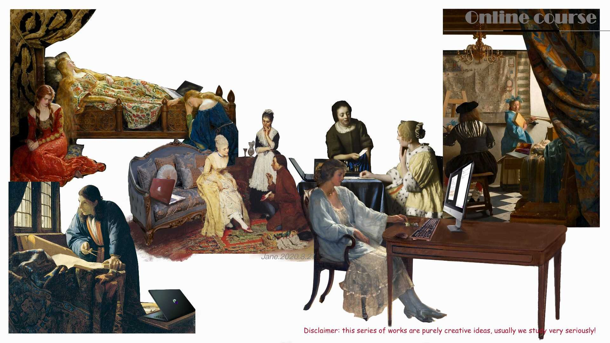
Finally, I have combined these characters
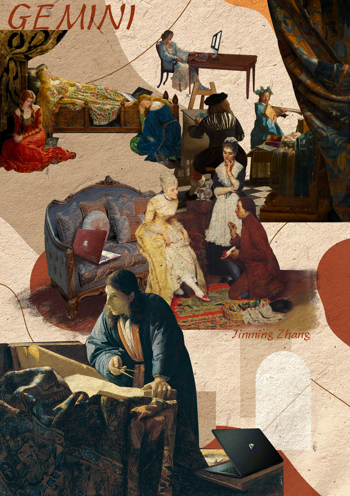